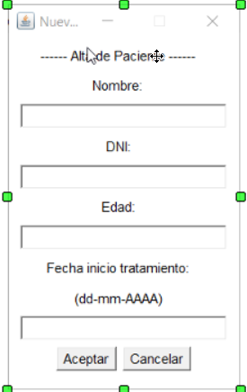
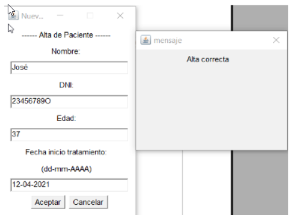

Para dar un elemento de alta, debemos pulsar en la opción 'Nuevo' que aparece en el menú. Al pulsar, se abrirá la siguiente ventana.
Debemos rellenar los campos con la información de cada elemento. El programa no permite que ningún espacio quede en blanco. Si intentamos dar de alta un elemento con algún campo vacío, aparecerá un mensaje de error y no se introducirá la información. La única excepción a esto sería, al dar de alta un psicólogo, podemos dejar el campo de supervisor en blanco, para indicar que dicho profesional no tiene supervisor. Para que el elemento se dé de alta correctamente, debemos cumplir algunas normas, por ejemplo, en el campo 'DNI' no podemos introducir más de 9 caracteres, en 'Edad' debemos introducir un número sin decimales y en 'Fecha inicio tratamiento' debemos introducir una fecha con números, siguiendo el formato que se indica. Para dar de alta un elemento pulsamos 'Aceptar' una vez los campos estén rellenos. Si pulsamos 'Cancelar', se borrará la información escrita en los campos. En caso de éxito en el alta o en caso de error, aparecerá un mensaje indicándolo.
